KEISAKU DOJO · REDESIGN ROUND 1 · 2026-10
香板禪堂 UI/UX、角色與動畫重設計
第一輪交付：現況審查、問題清單、新的 Art Direction，以及首頁／專注中／結算與角色的可互動原型。正式版完全沒有改動，所有內容都在 design/round1/，等方向確認後才進入實作。
原型上方的深色列是原型控制列，不屬於設計：可切換畫面、日／黃昏／夜、低效能、減少動態，以及觸發「被打」「連續分心」「快轉到結束」等示範。寬螢幕勾選「對照 v20」會左右並排，手機上則是 A/B 切換。
- v20 的角色與世界觀很完整，問題不在「缺東西」，在層次：場景是平面的，UI 每一塊都有框，紅色出現的次數太多，主要動作沒有被凸顯。
- 首頁應該是「場景 → 開始坐禪 → 這次的計畫 → 其他」，回訪者一鍵就能開始；專注中只留時間；結算變成一段可以略過的小儀式。
- 動畫要從「位移」升級為「表演」：預備、停頓、命中、回彈、收尾。並且分三個層級，同一時間只會有一個大事件。
目錄
01現況審查報告
以下結論都來自閱讀 src/ 的程式碼與實際截圖。標記 程式碼確認 的是我在原始碼裡看到的事實；標記 需裝置測試 的是合理推論，必須在你的 Android 手機與 iPhone 上驗證才能下結論。
- 計時用時間戳記（
P.end = Date.now() + …，app.js:1396；tick()用P.end - Date.now()），不依賴畫面幀數。背景、降頻都不會讓時間跑掉。 - 已經尊重
prefers-reduced-motion（app.js:3，各動畫入口都有檢查）。 - 表情動畫改寫 SVG
transform屬性（animateFace），在 iOS 上穩定。新方案沿用這個作法。 - 回訪者已經可以兩步開始：「跟上次一樣」→「準備好了」（
onboardingapp.js:942、readyCheckapp.js:1128）。 - 新手導覽會實際點亮熱點並要求點擊（
tour()app.js:1967），學習效果比文字說明好。 - 世界觀一致：悟之窗／迷之窗、坐禪帳、堂規、收藏冊都是場景裡的實物。
- 場景是平面的：牆面 y 0–176、榻榻米 y 176–280 都是平塗，角色沒有接觸陰影，看起來像貼紙浮在地上。
- UI 太多框：對話卡、計時卡、按鈕全部有 1.5px 邊框，視覺重量平均，眼睛找不到主角。
- 紅色太多：朱紅用在警示文字、連續天數徽章、被打的 toast、印章，降低了「被打」與「印章」的戲劇性。
- 首頁沒有「開始」按鈕：大大的 25:00 看起來可以按，但真正的入口是住持的問題與選項。
- 專注中地板被撐高：手機直式時舞台吃掉大半個螢幕，計時被推到最底下。
- 結算是靜態卡片：場景被模糊掉，麻糬看不見，坐完一炷的成就感沒有被表演出來。
- 打擊缺少表演節拍：有舉板與 160ms 停頓，但沒有「麻糬察覺」、沒有 hit-stop、沒有回彈與收尾。
02設計問題清單
P0＝影響第一印象或核心體驗，本輪要定案；P1＝明顯提升品質；P2＝打磨。
| # | 問題 | 證據（程式碼位置／畫面） | 類型 | 優先 |
|---|---|---|---|---|
| 1 | 首頁沒有明確的主要動作；25:00 大字看起來可以按，但其實不行 | 計時面板固定顯示 #clock（body.html 的 .panel）；入口是對話選項 .choice（dialog.css:23）。截圖：首頁 BEFORE | 程式碼確認 | P0 |
| 2 | 回訪者每天都要等打字動畫才能選 | typeText 每字 34ms（app.js:858）；開場一句約 20 字＝0.7 秒，接著還要「準備好了嗎？」再一句 | 程式碼確認 | P0 |
| 3 | 專注中舞台被撐高，計時被推到螢幕底部 | .stage-wrap { flex: 1 0 auto } 加 CSS 榻榻米背景填滿剩餘高度（dialog.css:323）。截圖：專注中 BEFORE | 程式碼確認 | P0 |
| 4 | 偵測說明在專注中一直以朱紅色顯示，像錯誤訊息 | .sense { color: var(--shu) }（dialog.css:277），圖示也是朱紅（dialog.css:726） | 程式碼確認 | P0 |
| 5 | 結算時場景被模糊，麻糬消失；沒有節奏 | showResult 一次填好全部文字並顯示 #result（app.js:1502）。截圖：結算 BEFORE | 程式碼確認 | P0 |
| 6 | 角色沒有接觸陰影，地板平塗，沒有前中後景 | svg.html 地板只有 .f-tatami 平塗＋橫紋 pattern；#sitter、#monk 下沒有陰影元素 | 程式碼確認 | P0 |
| 7 | 打擊缺少「察覺 → 預備 → 命中停頓 → 回彈 → 收尾」 | strike()（app.js:732）：走過去 → 泡泡 → 420ms → 舉板 380ms → 停 160ms → 揮下 85ms → impact()。麻糬只換成 ouch 臉並套 .ouch class | 程式碼確認 | P0 |
| 8 | 連續被打時表演完全相同，第三次開始像懲罰 | strike() 沒有依頻率改變演出；impact() 每次都是震動 80ms、畫面晃 .38s、6 顆星 | 程式碼確認 | P1 |
| 9 | 熱點不易發現：回訪者沒有任何提示，觸控裝置沒有 hover | .hotspot 完全透明，只有 @media (hover:hover) 的淡白底（dialog.css:537–541） | 程式碼確認 | P1 |
| 10 | 朱紅用途太多，稀釋了印章與被打的份量 | --shu 用於 .streak-badge（dialog.css:519）、.toast.hit（dialog.css:315）、.sense、印章 | 程式碼確認 | P1 |
| 11 | 全部文字都用霞鶩文楷，小字與按鈕的辨識度不足 | --f-display、--f-body 都是 LXGW WenKai TC（style.css:33–34） | 程式碼確認 需裝置測試 | P1 |
| 12 | 連續天數徽章（紅底數字）有「斷掉就可惜」的壓力，與「不強迫連續」的原則衝突 | #streakBadge 掛在坐禪帳熱點上；開場台詞「施主已經連續來了 N 天」 | 程式碼確認 UX 判斷 | P1 |
| 13 | 住持比例偏寫實（頭小身長），跟大福外形的麻糬語言不一致 | #monk 頭 r15、袍高 58（svg.html），約 1:2；麻糬是圓頂 | 程式碼確認 | P1 |
| 14 | 手機「螢幕朝下」模式下，專注畫面幾乎不會被看到；真正被看到的是拿起來那一刻 | readyCheck 文案「請把手機螢幕朝下平放」（app.js:1131）；拿起偵測 Mo.score（app.js:1196） | 程式碼確認 UX 判斷 | P1 |
| 15 | 被打時震動 80ms，在安靜環境偏強；iOS Safari 不支援震動 | buzz(80)（app.js:756）；navigator.vibrate 在 iOS Safari 不存在，所以 iPhone 上這段無效 | 程式碼確認 需裝置測試 | P2 |
| 16 | 模糊濾鏡與 blend mode 在低階 Android 可能掉幀 | 夜間月光已用 feGaussianBlur 與 mix-blend-mode: screen（svg.html #nightLights）；新方案會用更多 | 需裝置測試 | P2 |
| 17 | WenKai 字重偏細，夜間深底上的小字可能發糊 | 夜間 --muted: #a39e8f 配 13px 文楷 | 需裝置測試 | P2 |
BEFORE 截圖（v20 正式版）
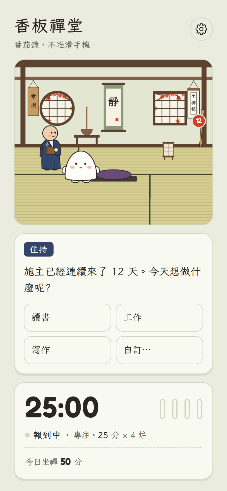
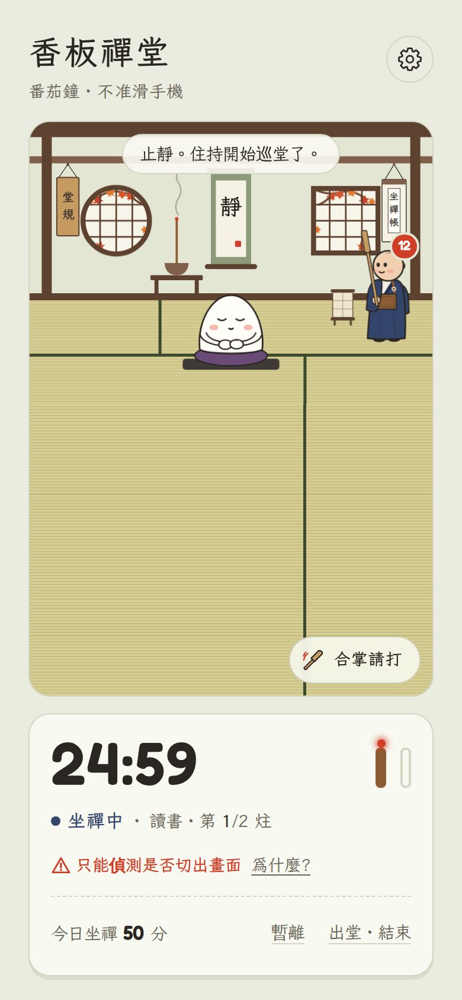
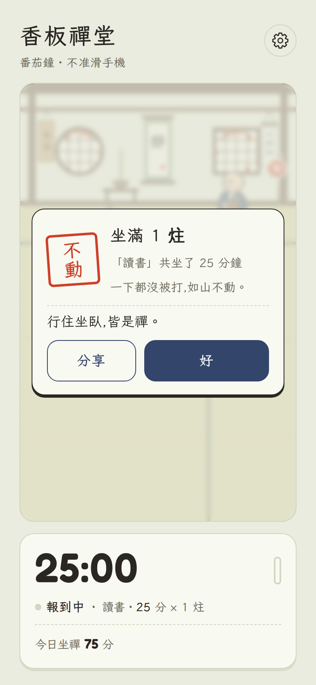
03新的 Art Direction
Cozy Zen × Character Animation × Japanese Illustrated Diary
像一本手繪的禪堂日記：紙是和紙，墨是暖墨，光從窗戶進來，角色站在地上、有重量。
場景分層
- 背景：牆、梁、柱、兩扇窗、床之間（tokonoma）。床之間是新增的凹室，給房間一個「更深的後面」，掛軸與香爐移進去。
- 中景：透視榻榻米。縫線向消失點 (200, 40) 收斂，三排間距由遠而近 30 → 46 → 38；牆根加一條 18 單位的 AO 漸層。
- 角色：住持、蒲團、麻糬。蒲團有座布團＋圓柱體兩層；麻糬坐下時下沉 2 單位，前緣蓋過身體底部，看起來真的坐進去。
- 前景：底部一條緣側木框＋柔和暗角（vignette），把視線收向中央。
- Ambient：整體色溫。黃昏用 multiply 暖色 16%。
- Window light：窗戶光柱＋地上光斑。白天柔白、黃昏長而暖（光斑落在麻糬身上）、夜晚從方窗來的冷月光。
- Local light：夜間行燈的暖光、香頭的小火點。
- Character light：麻糬的徑向漸層體積＋迎光側的 rim light（黃昏在左、夜晚在右）。
- Contact shadow：每個角色腳下模糊橢圓；麻糬跳起時陰影縮小變淡。
低效能模式：拿掉所有 feGaussianBlur、灰塵粒子、畫面晃動與 backdrop-filter；陰影改成不透明度 70% 的實心橢圓。結構與光的方向都不變。
色彩
#f3eee2#fbf8f1#3b2f27#34466e#c8432d#7c8a55#c99a3e#ece3cf#d9ca90#6b4a33規則：朱紅只出現在兩個地方：結算印章，以及被打那一瞬間的特效。警示改用中性墨色＋說明；「有新東西」用抹茶色小圓點。UI 不再用框線分隔，改用紙面＋柔和陰影（elevation），框線只留給輸入元件。
線條
全部角色與道具統一使用暖墨 #3b2f27（夜間 #2a231e），圓頭圓角。外框 2.2、主要內線 1.6–2.0、細節 0.8–1.2。不用純黑，不用不同顏色的描邊。
字體與字級
三種字體各有職責：文楷是住持的聲音與標題（敘事），粉圓 Huninn 是所有要「操作」的文字（按鈕、標籤、設定、狀態），Fredoka 只用於數字。
22–34 / 1.25香板禪堂
76 / 1（專注中）24:59
20–24 / 1.3坐滿 2 炷
17 / 1.65早安。今天也來坐一炷嗎？
15–18 / 1.5開始坐禪 調整本次 暫離
13 / 1.4一炷多久 坐幾炷 今日坐禪
隨字級75 分
粉圓在 Google Fonts 以 unicode-range 分片載入，只會下載用到的字；實際增加的流量要在裝置上量測 需裝置測試。觸控目標一律 ≥ 44px，主要按鈕 58px。
04首頁／專注中／結算 重設計
首頁：3 秒內看懂
閱讀順序被設計成：場景（我在禪堂）→ 開始坐禪（唯一的藍色大按鈕）→ 這次的計畫（讀書・25 分 × 2 炷）→ 次要資訊（今日分鐘、本週來堂）。
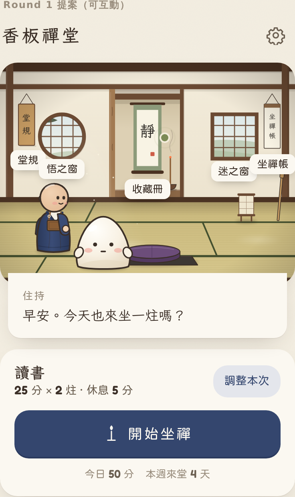
- 三層設定：快速開始＝直接按「開始坐禪」，沿用上次計畫（1 次點擊，現在是 2 次＋等打字）。調整本次＝原地展開三排 chip（做什麼／一炷多久／坐幾炷），不跳頁。進階設定＝偵測方式、鐘聲、每日目標，收在「調整本次」最下面的連結與齒輪裡。
- 住持的話變成場景下緣的一條紙片，跟場景連在一起，而不是另一張獨立卡片。回訪者的問候直接顯示（淡入 200ms）；打字動畫只保留給新手開場與特殊事件，且點一下就跳完。
- 熱點可發現性：進場時名牌浮現 2.6 秒（前 3 次造訪，之後只在有新內容時）；長按場景任何地方會顯示全部名牌；有新收藏時在收藏冊旁放抹茶色小點，脈衝 3 次後停止。
- 連續天數改成「本週來堂 4 天」，不顯示紅色徽章，斷掉也不提醒。
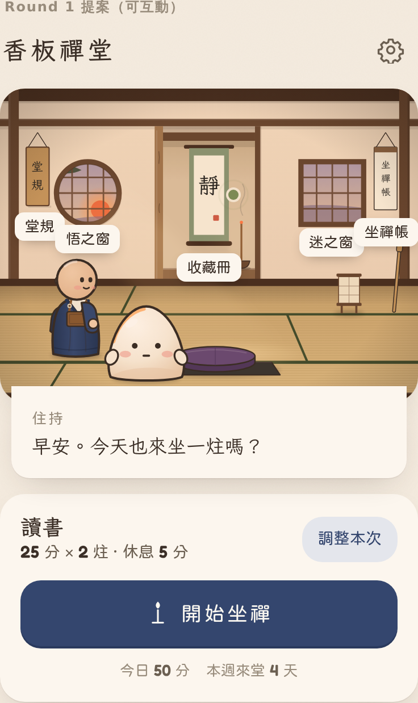
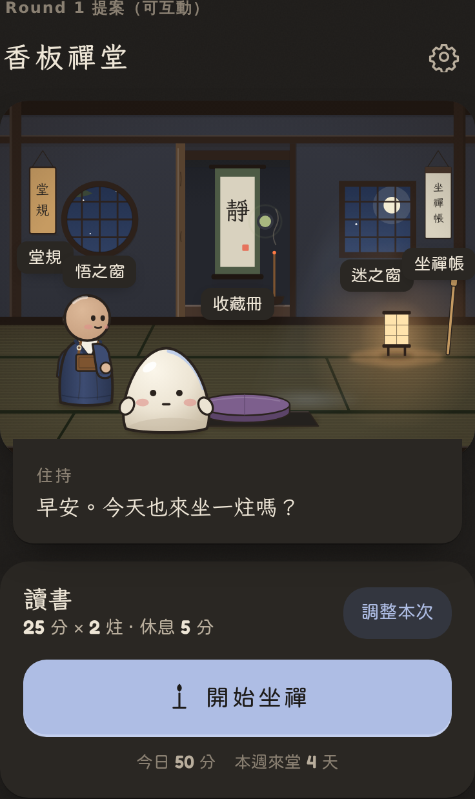
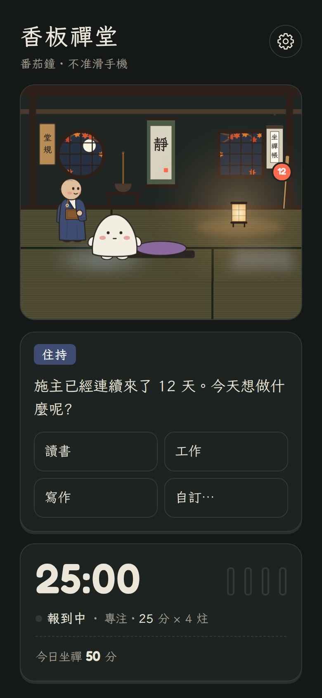
專注中：只留時間
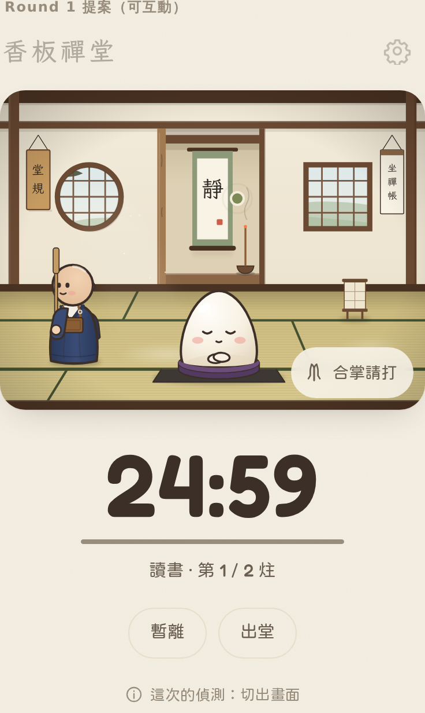
- 舞台固定 4:3；多出來的高度留給時間，大字 76px 置中，下面一條細細的香（進度）與「讀書・第 1 / 2 炷」。
- 標題列淡到 35%；「暫離」「出堂」是無底色的 ghost 按鈕。
- 偵測說明改成中性的
ⓘ 這次的偵測：切出畫面，點開才有解釋，不再有紅字。 - 「合掌請打」變成場景右下的半透明膠囊，不與時間搶位置。
- 手機螢幕朝下模式：畫面多半不會被看到，所以拿起手機的那一刻才是重點。建議第 2 輪設計「拿起來」的瞬間畫面：住持已經轉頭看你、時間清楚可見。
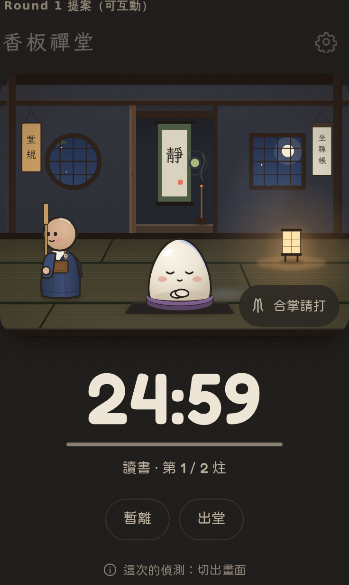
結算：一段可以略過的小儀式
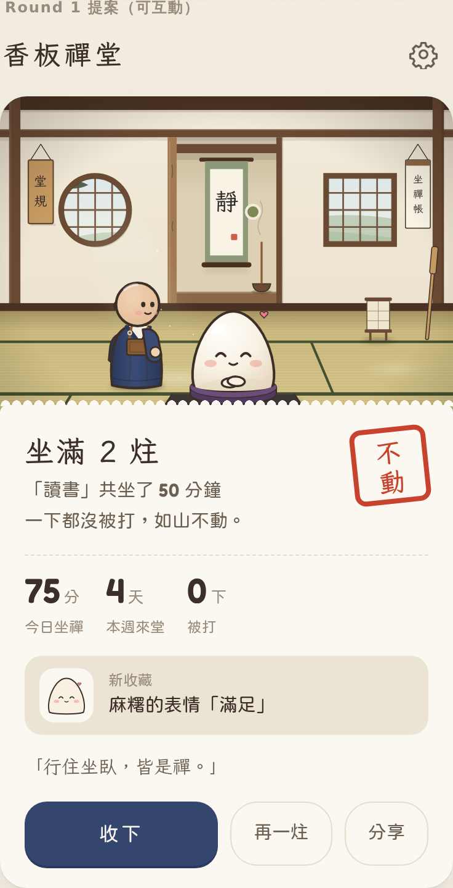
- 鐘 0 ms：一聲鐘，香頭熄滅。
- 麻糬 700 ms：睜眼 → 伸懶腰（拉長 1.10 / 0.94，雙手舉高）→ 彈回 → 滿足臉。
- 住持 ≈1.8 s：轉向麻糬、瞇眼笑，泡泡「坐得很穩。」
- 紙 ≈2.3 s：和紙（上緣是毛邊）從下方滑上，蓋住舞台下緣 26px，場景不被模糊。
- 印 ≈2.9 s：印章從 1.6 倍、−14° 落下壓到 0.94 再回 1.0；紙面震一下、輕震動 12ms。唯一的朱紅。
- 紀錄 ≈3.3 s：今日分鐘、本週來堂、被打次數依序數上來。
- 解鎖 ≈5 s：只有在有新東西時出現：新收藏卡片帶 overshoot 滑入。
- 動作 ≈5.6 s：公案淡入，然後「收下」「再一炷」「分享」。
右上角「略過 ›」或點舞台任何地方，立刻跳到最終狀態。減少動態模式下全部直接顯示終態。從背景回來時也直接是終態，不會重播。
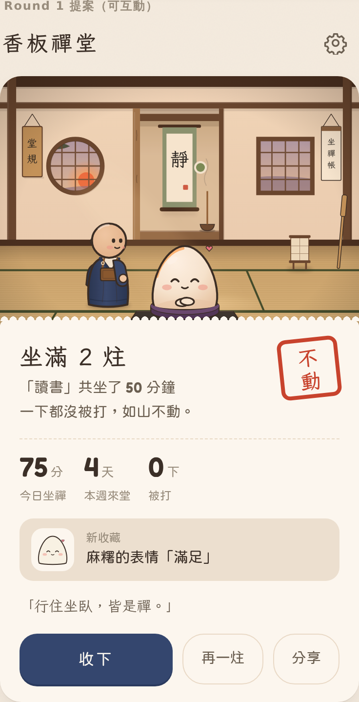
05麻糬與住持角色規範
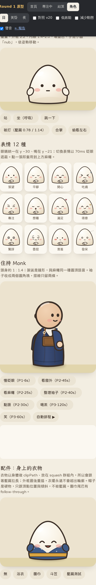
麻糬
- 大福輪廓，高 68、寬 72，底部最寬，表現重量（舊版是蛋形，底部收窄）。
- 路徑：
M-34 0 C-38 -10 -36 -30 -26 -48 C-18 -62 -8 -68 0 -68 C8 -68 18 -62 26 -48 C36 -30 38 -10 34 0 C22 4.5 -22 4.5 -34 0 Z - 五官偏下：眼睛 y −30、x ±11；嘴 y −21；腮紅 (±20, −22)。fx（汗、Z、愛心、星）在頭的右上 (24–36, −40 – −64)。
- 體積：徑向漸層（亮點在左上 36%/26%）＋底部陰影新月＋左上高光；黃昏／夜加 rim light。
- 手是小圓「nub」，依姿勢移動：side（站）、lap（坐禪手印）、gassho（合掌）、rub（摸頭）、cheer（舉手）、tuck（預備蜷縮）。
roottranslate（位置）→leanrotate（以底部為軸，傾斜與跳躍高度）→squashscale（以底部為原點，壓扁不會離地）。- 陰影獨立於 lean：跳得越高越小越淡（
k = 1 − lift/70）。 - 眼睛群組另外有 blink（scaleY）與 gaze（±3 位移）。
- 呼吸（L1）：坐著 1.3 rad/s、幅度 1.4%；站著 2.2 rad/s、0.8%。
- 壓扁體積守恆的近似：sx ≈ 1 + (1 − sy) × 0.65。
表情規格（12 種）
共通規則：切換表情一律用 70ms 眨眼遮住（先閉眼、換、再睜眼），避免五官突然跳動。fx 永遠畫在配件之上。
| 表情 | 眼 | 眉 | 嘴 | fx／身體 | 何時出現 | 持續 |
|---|---|---|---|---|---|---|
| 張望 peek | 實心圓點 r2.7，會眨眼、左右看 | — | 短橫線 | 站姿，手在兩側 | 首頁、站著時 | 常駐 |
| 平靜 calm | 下彎弧（閉眼） | — | 小微笑 | 坐姿、呼吸 | 坐禪預設 | 常駐 |
| 專注 focus | 水平線 | 內斜短眉 | 短橫 | 呼吸 | 夜間坐禪、合掌請打前 | 常駐 |
| 開心 happy | 上彎弧 ^^ | — | 張口笑（填色） | 跳躍時 | 跳上蒲團、選好計畫 | 0.6–1.2s |
| 吃痛 ouch | > < | — | 波浪 | 汗滴下落；壓扁 0.78/1.14 | 命中瞬間 | ≈1.0s |
| 委屈 teary | 水平線＋淚滴 | 八字眉 | 細波浪 | 手揉頭之後 | 被打的收尾 | 0.9s |
| 驚訝 surprised | 白眼＋瞳孔 | — | 小 o | 三條衝擊線 | 被抓到的「察覺」 | 0.2–0.4s |
| 想睡 sleepy | 半閉 | — | 打哈欠 o | Z 往上飄 | 長炷的後半段 | 2–3s |
| 滿足 content | ^^ | — | 柔和微笑 | 愛心往上飄 | 完成一炷、結算 | 結算全程 |
| 得意 proud | ∧ 尖眼 | — | 歪嘴笑 | 眼角金星閃爍 | 合掌請打之後、零被打 | 1.2s |
| 害羞 shy | 看向一邊的圓點 | — | 小波浪 | 腮紅加斜線 | 被稱讚、點麻糬 | 1.2s |
| 發呆 daze | 空心圓 | — | 短橫 | 三點依序亮起 | 遲到回座 | 2s |
住持
- Q 版：頭 r19、身高 53，頭身約 1 : 1.4（舊版約 1 : 2）。
- 袈裟是鐘形，與麻糬同一種圓頂語言；袖子收成兩個圓角塊（遠側袖在身後、近側袖在前並握板）。
- 摺線只留兩條、透明度 30%；絡子（rakusu）簡化成一塊褐色方片＋兩條肩帶。
- 臉是固定的 3/4 側面朝右，轉身用 scaleX 經過 0 的翻轉（180ms）。
- 骨架：flip → lean（含 squash）→ bob；頭以脖子 (1, −54) 為軸；手臂以肩 (10, −45) 為軸，香板在手臂群組裡。
- 眼：open（圓點）／smile（^^）／shut（閉）／stern（壓低的眉）／wide。
- 嘴：smile／flat／laugh／o／sip。
- 一般巡堂是 open＋smile；打人前是 stern＋flat；打完鞠躬是 shut＋smile。
住持待機表演：優先級與冷卻
| 表演 | 優先 | 冷卻 | 長度 | 可出現的情境 | 動作 |
|---|---|---|---|---|---|
| 慢眨眼 | 1 | 6 s | 0.4 s | 首頁、專注、休息 | 閉眼 380ms |
| 看麻糬 | 2 | 25 s | 1.9 s | 首頁、專注 | 轉向麻糬，頭微傾 6°，微笑 |
| 點頭 | 2 | 30 s | 0.7 s | 首頁、結算 | 頭下點 9° 兩次 |
| 整理袖子 | 2 | 40 s | 1.0 s | 首頁、休息 | 手臂上抬 −14° → 6° → 彈回，肩膀微聳 |
| 看窗外 | 2 | 45 s | 2.4 s | 首頁、專注 | 轉身朝窗，抬頭 −9°，停 1.5s |
| 笑 | 3 | 60 s | 0.9 s | 首頁、結算（專注中不笑） | ^^＋張口，身體彈三下 |
| 喝茶 | 3 | 120 s | 2.2 s | 首頁、休息（專注中不喝） | 放下香板，杯子到嘴邊，閉眼 |
排程規則：從「情境允許＋冷卻已過」的候選中，取最高優先級，並以 35% 機率混入較低優先的，避免太規律。L3 事件進行中一律不排。原型「角色」分頁的「自動排程」會把每一次決定寫進紀錄。
配件，特別是身上的衣物
- 軟配件（衣物、圍巾本體、腰帶）：以麻糬身體做
clipPath，放在 squash 群組裡面。所以會跟著壓扁拉長，衣襬永遠不會超出輪廓；外框在衣物之後重描一次，邊緣乾淨。 - 衣物結構（以浴衣為例）：衣領是兩條相交的弧線，在中線 y −10 交會，左襟壓右襟（觀者看到右側那片在上）；白色半襟 3px；腰帶 y −9 到 −2；袖口＝手 nub 換成布料色（
--sleeve）並加一條袖口線；下襬就是身體底線。 - 垂墜物（圍巾尾巴、流蘇）：在 clip 之外，掛在固定錨點，旋轉角跟著垂直速度與身體傾斜延遲（follow-through，lerp 0.12）。
- 硬配件（帽子、斗笠、花）：放在 squash 外面，只跟頂點位置
−64 × sy與傾斜（延遲 0.18），寬度只跟 50% 的 sx，形狀不被壓扁。 - 臉部 fx 永遠畫在硬配件之上（延續 v20 的
.fx層規則）。
06動畫規範與狀態轉換
三個層級
| 層級 | 內容 | 規則 |
|---|---|---|
| L1 環境 | 呼吸、眨眼、香煙飄、窗光灰塵、住持站立的微晃 | 永遠在跑、不等待、幅度 ≤ 2%；減少動態時停止；hit-stop 時凍結 |
| L2 回饋 | 跳上蒲團、表情切換、住持待機表演、熱點名牌 | 每個角色同時只有一個；遇到 L3 立即取消或延後 |
| L3 事件 | 打擊、結算儀式、解鎖 | 互斥：同時只會有一個。進行中又發生的打擊不排隊重播，而是合併成計數，收尾時由住持說「（又分心了 N 次）」 |
打擊：10 個步驟
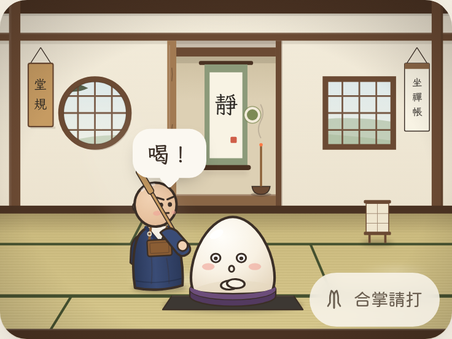
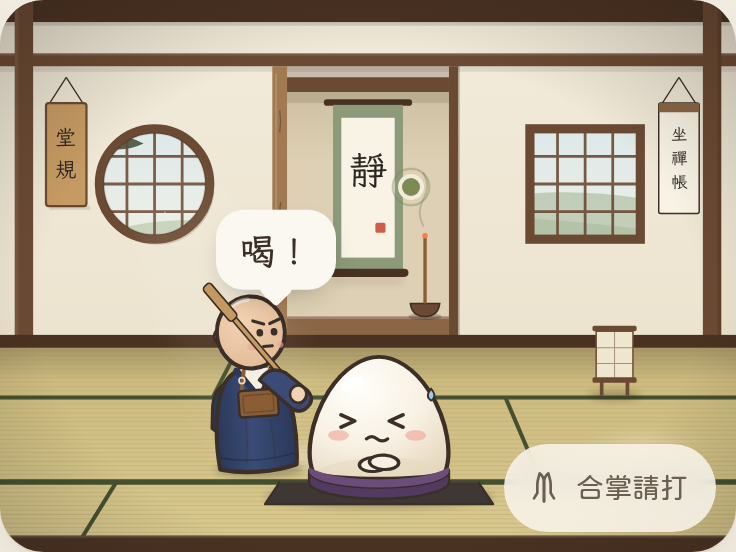
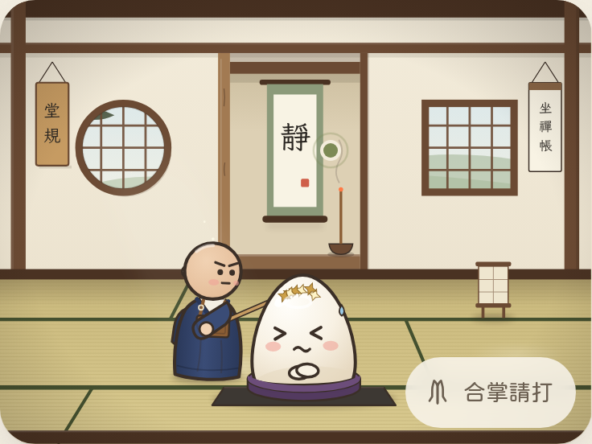
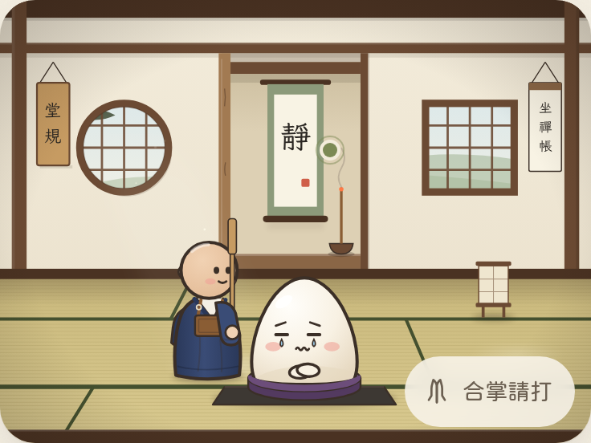
| # | 步驟 | 時間 | 住持 | 麻糬 |
|---|---|---|---|---|
| 1 | 觸發 | 0 | 偵測事件發生。UI 不閃、不跳紅字；由場景說故事 | |
| 2 | 察覺 | 200ms | — | 驚訝臉，視線轉向住持（gaze −2.6） |
| 3 | 轉身 | 180ms | stern 眉，scaleX 翻轉朝麻糬 | — |
| 4 | 走近 | 距離 ÷ 170 u/s | 走路 bob、雙腳交替 | — |
| 5 | 舉板（預備） | 380ms, back easing | 手臂 −38°、身體後仰 −4°、微拉長 | 縮起來 0.94，換吃痛臉 |
| 6 | 停頓 | 170ms | 「要來了」的那一拍 | |
| 7 | 揮下 | 85ms, ease-in | 手臂 +71°、前傾 5°、微壓扁 | — |
| 8 | 命中＋hit-stop | 70ms 凍結 | 啪（合成木聲）、震動 28ms | 壓扁 0.78 / 1.14、傾 3°；星星 ×6、衝擊環、畫面晃 2.2px |
| 9 | 回彈 | 520ms spring | follow-through 再過 −8° | 阻尼彈簧回到 1.0（會過頭一點再回來） |
| 10 | 收尾 | ≈1.5s | 香板放下、閉眼微笑點頭 | 手揉頭、搖一下 → 委屈臉偷看住持 → 平靜 |
- 10 秒內再次分心：住持還站在旁邊，跳過步驟 2–4；星星減為 3 顆、晃動減半。
- 1 分鐘內第 3 次：改成「輕點」：手臂只舉 −12°，沒有喝、沒有星星、沒有晃動、沒有 hit-stop，聲音音量 ⅓；住持說「回來吧。」
- 計數規則（P.hits 等）不變，只改演出。是否要改計數語意，留給你決定。
原型專注中按「連續分心 ×3」可以看到三種演出依序出現。
跳上蒲團
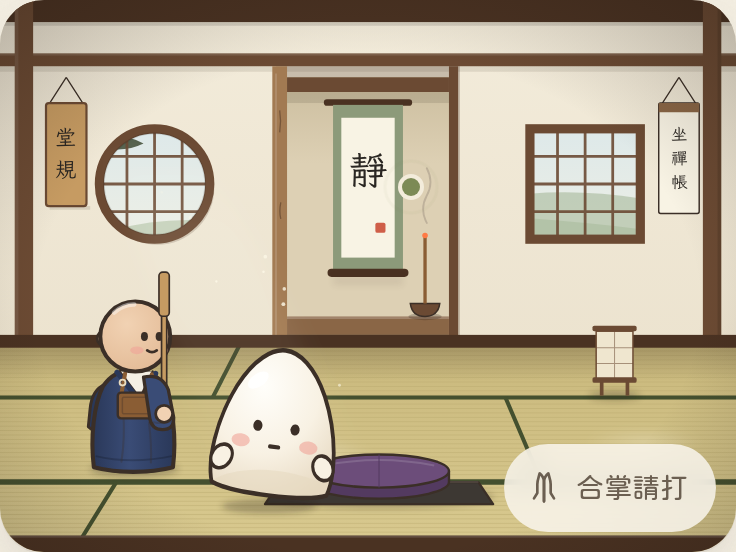
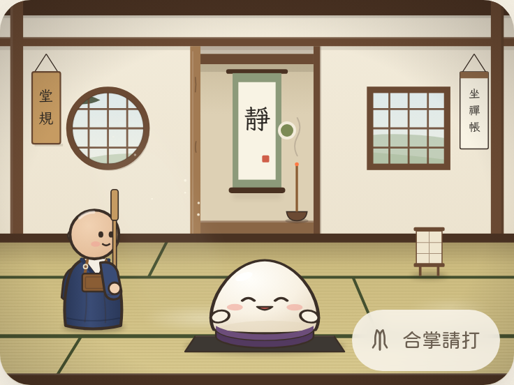
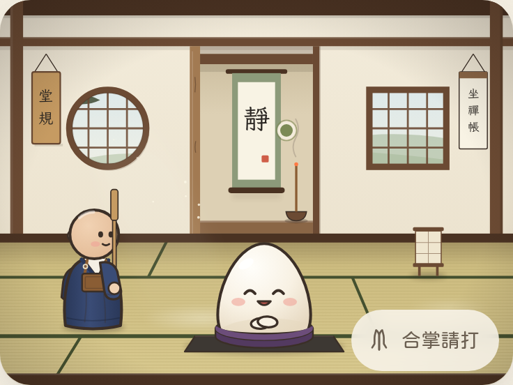
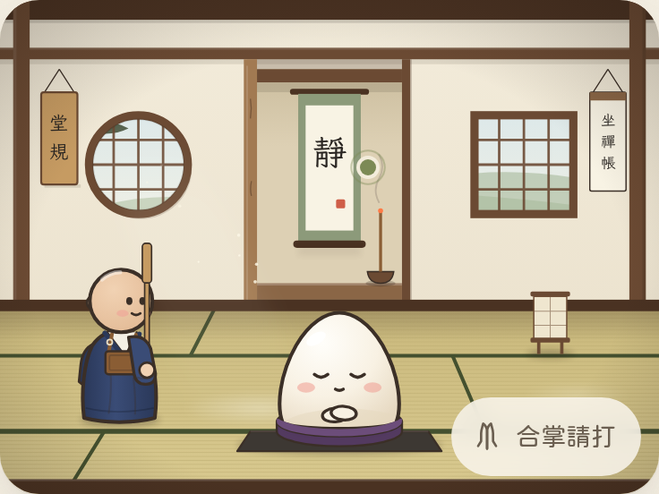
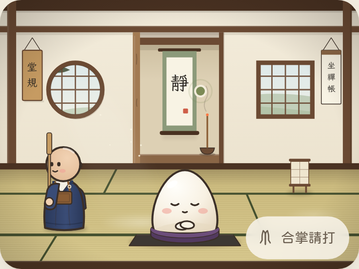
狀態轉換
- 每個狀態進入時先 flush 前一個狀態的所有 tween（直接套用終值），不留殘影。
- 打擊只能從「專注」進入，結束一定回到「專注」；結算期間不可能被打。
- 從背景回來（
visibilitychange）：所有進行中的動畫直接跳到終態，不補播。
技術規範
- 單一
requestAnimationFrame迴圈；每幀寫入 SVGtransform屬性（不是 CSS transform），iOS Safari 一致。 - tween 以
performance.now()計算進度，掉幀只會少畫幾格，不會變慢。 - 計時仍以
Date.now()的結束時間戳記為準，與動畫完全脫鉤。 - hit-stop 用「凍結到某時間點」實作，不阻塞計時。
- UI 小動畫（紙、印章）可以用 WAAPI；角色一律走 rAF。
- 音效用 WebAudio 即時合成（鐘、木聲、蓋印），不需要額外檔案；正式版可沿用 v20 的音色。
- prefers-reduced-motion：沒有跳躍弧線、晃動、粒子、呼吸；表情仍會換；儀式直接顯示終態。
- 低效能（自動偵測：連續 2 秒 < 40fps，或手動）：去 blur、去 blend、去粒子、去 backdrop-filter。
- Android Chrome：
navigator.vibrate可用；音效需要使用者手勢後才能開始。 - iOS Safari：沒有震動，只靠聲音與畫面；PWA 背景計時以通知補足（v20 已有）。
聲音、觸覺、無障礙
| 時刻 | 聲音 | 觸覺（Android） | 無障礙 |
|---|---|---|---|
| 開始 | 三聲鐘（沿用） | — | 計時加 role="timer"，aria-live="off"，每 5 分鐘 polite 報一次 |
| 跳上蒲團 | 輕「啵」 | 8ms | — |
| 命中 | 木聲「啪」（輕點時 ⅓ 音量） | 28ms（輕點 10ms；舊版 80ms） | 螢幕閱讀器播報「住持敲了一下肩膀」 |
| 結算印章 | 悶「咚」 | 12ms | 結算區域 aria-live="polite" 只播最終結果，不播動畫過程 |
| 熱點 | — | — | 每個熱點都是 <button> 並有 aria-label；focus-visible 外框 |
對比：紙面 #fbf8f1 上的暖墨 #3b2f27 約 12:1；次要字 #6b5f51 約 5.9:1；最淡的 #988c7c 約 3.1:1，只用於 ≥13px 的標籤與輔助說明。
07分階段實作計畫
| Phase | 內容 | 完成條件（驗收） | 估計 |
|---|---|---|---|
| 0 定案 | 你審本原型；決定第 9 節的問題；在 Android 與 iPhone 上試原型（含低效能模式） | 方向確認；裝置測試假設（#11、#15、#16、#17）有結果 | — |
| 1 基礎 | Design tokens（色、字、陰影、圓角）；引入粉圓；移除框線改 elevation；朱紅收斂；.sense 改中性 | 所有畫面套用新 token；朱紅只剩印章與命中；舊資料無影響 | 1.5 天 |
| 2 場景 | viewBox 改 400×300；床之間、透視榻榻米、AO、前景框、五種光、接觸陰影；低效能分支；熱點位置重算 | 日／黃昏／夜 × 四季全部正確；低階 Android ≥ 50fps；所有熱點可點 | 3 天 |
| 3 角色 | 麻糬大福輪廓與新 rig；12 表情重繪；住持 Q 版重繪；所有既有配件依新 clip／硬配件規則移植 | 收藏冊每一項在站／坐／跳／被打四種狀態下都沒有破綻（逐張截圖） | 4–5 天 |
| 4 動作 | tween 引擎與 L1/L2/L3 排程；跳上蒲團；10 步打擊與節流；住持待機表演 | 動作只改演出、不改計數；背景回來無殘影；減少動態正確 | 3 天 |
| 5 畫面 | 首頁（一鍵開始、調整本次、熱點名牌）；專注中（固定舞台）；結算儀式（可略過）；開場打字只留給新手 | 回訪者 1 次點擊開始；3 秒測試；結算可略過；既有 e2e 測試通過（必要時更新選擇器） | 3 天 |
| 6 打磨 | 聲音與觸覺微調；拿起手機的瞬間畫面；收藏冊與坐禪帳套新風格；多裝置截圖 review | 多裝置截圖無破綻；你在手機上確認後上版 | 2–3 天 |
每個 Phase 都會先出 preview／debug 版給你在手機上試，說「上版」才合併。資料格式（keisaku-log-v2、keisaku-collect-v1 等）在整個計畫中都不改。
08風險、工作量、優先級
| 風險 | 影響 | 對策 | 優先 |
|---|---|---|---|
| 配件移植量大：每個配件都要對新輪廓重畫，數量多 | Phase 3 可能超時 | 先做衣物類（最容易出破綻），帽子類大多只需調錨點；用截圖腳本逐項比對 | P0 |
| viewBox 改 400×300 會影響熱點、星星、toast、季節窗景等所有座標 | 位置錯亂 | 集中成一份座標表；e2e 測試加熱點可點檢查 | P0 |
| 模糊與 blend 在低階 Android 掉幀 | 卡頓、耗電 | 低效能自動偵測；陰影可預先畫成漸層而不是濾鏡 | P1 |
| 新增粉圓字體的流量與首次載入 | 首次開啟變慢 | 只用於 UI、按需分片；Service Worker 快取；量測後決定 | P1 |
| 角色換造型，老使用者可能不習慣 | 「麻糬變了」 | 保留五官與顏色的辨識度；在更新說明讓住持介紹「麻糬換了新衣服」 | P2 |
| 結算儀式變長，每天看可能嫌煩 | 拖慢節奏 | 全程可略過；同一天第二次起自動縮短為 1.5 秒版本（建議） | P2 |
總工作量約 17–19 個工作天（不含 Phase 0 的等待）。若要先拿到最大效益，建議順序：Phase 1 → 5 的首頁與專注中 → 4 的打擊，這三項就能解決 P0 的 #1–#4、#7；場景與角色重繪（Phase 2、3）是最大的一塊，可以獨立排程。
09需要你決定的事
- 整體方向：場景深度、新麻糬輪廓、Q 版住持，這個方向對嗎？還是要更接近 v20？
- 連續天數：改成「本週來堂 N 天」、拿掉紅色徽章，可以嗎？
- 首頁開場：回訪者不再被問「今天想做什麼」，直接顯示上次計畫＋「開始坐禪」。住持仍會說一句問候。可以嗎？
- 連續分心的計數：演出會節流，但被打次數照算（不改語意）。要不要也合併計數？（我建議不改）
- 結算印章「喝」：被打很多次時的印章是「喝」，配文「肩膀辛苦了」。我覺得不算羞辱，可以保留；你想換嗎？
- 字體：功能文字改用粉圓，敘事保留文楷。可以接受多載入一套字嗎？
- （上一輪留下的）表情：在收藏冊選的「平常表情」，坐禪時目前會換成平靜／專注。要不要讓坐禪時也維持所選表情？
原型的程式在 design/round1/proto.html；截圖在 design/round1/img/。正式版 src/ 沒有任何改動。